A patient with cirrhosis and ascites becomes oliguric and the creatinine starts to climb. Before anyone orders albumin, three questions decide the next hour. Is there a cause that needs treatment right now — bleeding, septic shock, obstruction? Would more fluid improve perfusion, or worsen congestion and oxygenation? And if kidney function fails to improve after indicated resuscitation, does hepatorenal syndrome (HRS) presenting as acute kidney injury (AKI) — HRS-AKI — best explain what remains? The answers can change over a single shift. This guide follows the 2024 Acute Disease Quality Initiative and International Club of Ascites (ADQI–ICA) consensus, which retired the routine 48-hour albumin challenge and treats HRS-AKI as a phenotype that can coexist with tubular injury or chronic kidney disease (CKD) rather than a diagnosis reached only after everything else is excluded.1
Treat shock, bleeding, and emergencies first — the HRS label can wait
Hemorrhage, suspected septic shock, refractory hyperkalemia or acidosis, pulmonary edema with hypoxemia, and urinary obstruction take priority over HRS classification. Stabilize, then re-ask whether hepatorenal physiology explains the kidney dysfunction that remains. Before any terlipressin dose, apply the respiratory and ischemia safety gate.
What to Hold in Mind at the Bedside
Think of HRS-AKI as a kidney that behaves as if the patient were bleeding, inside a body that is holding too much salt and water. The circulation feels underfilled because the splanchnic arteries have dilated, so the kidney clamps down on its own blood flow even while ascites accumulates. That single idea explains why the same patient can be fluid-overloaded and kidney-underperfused, why a fluid bolus helps one patient and drowns another, and why the treatment that works is a vasoconstrictor that restores arterial filling rather than more volume.1,13
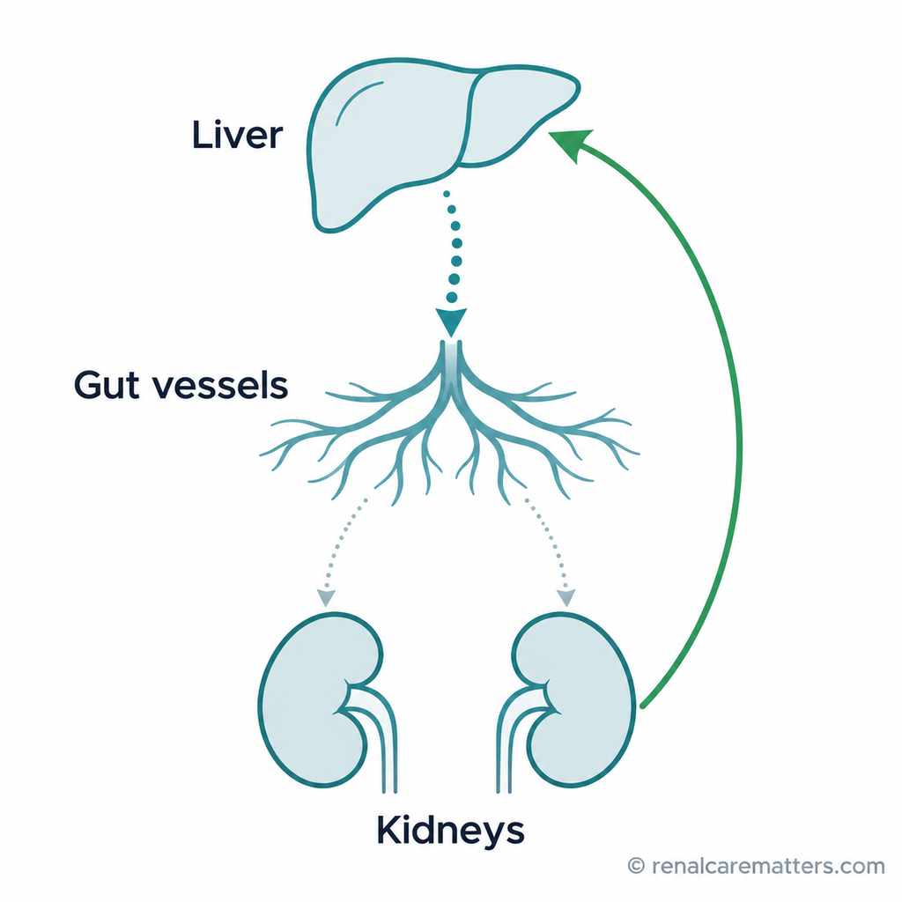
Scarring in the liver makes the gut’s blood vessels widen and hold more blood. Less blood reaches the kidneys, so they clamp their own vessels and filter less. Treatment aims to push blood back into the main circulation so the kidneys can open up again.
- Recognize AKI from the change, not the absolute value. A rise of ≥0.3 mg/dL in 48 hours or ≥50% over the 3-month baseline is AKI, even when the number still looks normal. Sarcopenia, dilution, and bilirubin interference all make serum creatinine (SCr) understate the loss of filtration.1,2
- Treat the precipitant and judge perfusion and congestion in parallel. When resuscitation is indicated, reassess SCr and urine output (UO) within 24 hours. When volume is already adequate or excessive, skip the fluid trial and move on.1
- Apply all four ADQI–ICA elements — cirrhosis with ascites, AKI by SCr or UO, no improvement after indicated resuscitation, and no stronger alternative explanation.1
- Once HRS-AKI is established, start a monitored vasoconstrictor promptly, individualize albumin to volume status, and start transplant evaluation in parallel — reversal is a bridge, not a cure.1,3,4
Each major statement carries one of these labels. Verbs are calibrated: demonstrates and reduces are reserved for randomized evidence on that outcome; suggests marks single-trial or post hoc signals; is associated with marks observational relationships; may marks mechanism. Trial percentages are reported with their endpoint name, because the endpoints differ between trials and between the trial report and the product label.
Why Ascites and Poor Kidney Perfusion Coexist
Start with the normal kidney. Renal blood flow is held roughly constant across a wide band of arterial pressure by autoregulation: the afferent arteriole constricts when pressure rises and relaxes when it falls, so glomerular capillary pressure, and therefore filtration, stays stable. The kidney has its own reserve, and in health it seldom needs the rest of the circulation to defend it.
Now add portal hypertension. Scarring raises intrahepatic resistance, and portal pressure climbs. The splanchnic arterioles respond by dilating — driven by nitric oxide, carbon monoxide, endocannabinoids, and bacterial products that cross a leaky gut wall and stimulate local vasodilator release. Systemic vascular resistance falls. Even with a high cardiac output and an expanded total plasma volume, the arterial tree is relatively underfilled: the volume sits in the splanchnic bed rather than in the arteries that baroreceptors sense.
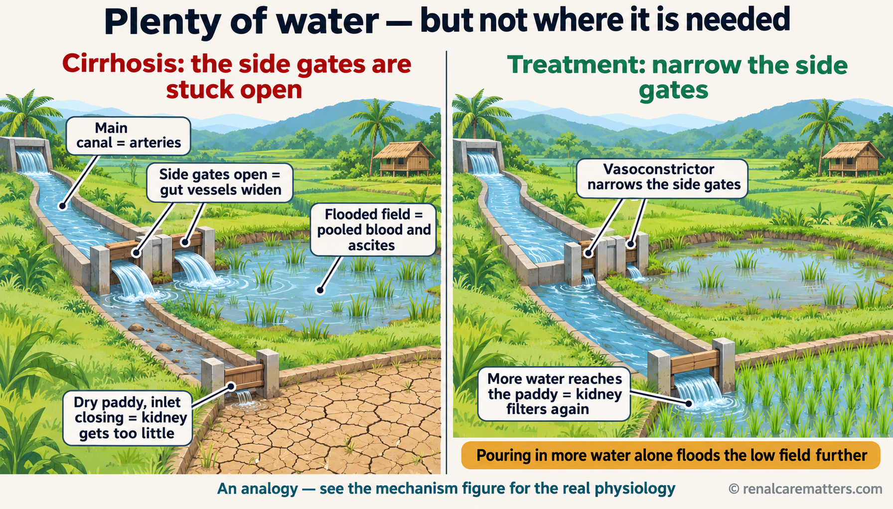
In cirrhosis, widened gut blood vessels act like irrigation side gates stuck open: water floods a low field, standing in for pooled blood and ascites, while the paddy, the kidney, dries out. Narrowing those gates with a vasoconstrictor sends flow back to the kidney; pouring in more water only floods the field. In the real body, the “inlet gate” is the kidney’s own blood vessels constricting under hormonal signals.
The body reads underfilling as hemorrhage. Baroreceptor unloading activates the renin–angiotensin–aldosterone system (RAAS), the sympathetic nervous system, and nonosmotic vasopressin release. Each response is appropriate for a bleeding patient and harmful here. Aldosterone and sympathetic tone drive avid sodium retention, which accumulates as ascites; vasopressin causes free-water retention and dilutional hyponatremia; and angiotensin II plus sympathetic tone constrict the renal vasculature. As cirrhosis advances, cardiac output can no longer rise to compensate — the reserve that some authors describe as cirrhotic cardiomyopathy — and the kidney loses perfusion pressure faster than it can autoregulate. That is HRS physiology: a kidney with intact structure, starved of effective perfusion.1,12,13
Then add the modifiers. Infection — spontaneous bacterial peritonitis (SBP) above all — and systemic inflammation intensify vasodilation and can cause acute tubular injury (ATI) directly, which is why the ADQI–ICA panel no longer insists that HRS be "purely functional."1 Large-volume paracentesis without albumin, bleeding, and overdiuresis abruptly reduce effective volume. Tense ascites can raise intra-abdominal and renal venous pressure, and right-heart dysfunction can add venous congestion; both lower the pressure gradient across the kidney from the venous side. Each modifier points to a different bedside decision, which the figure below links explicitly, often judged by the mean arterial pressure (MAP) response.
Portal hypertension dilates the splanchnic arteries, so the arterial circulation is underfilled even though total body fluid is high. The body responds as it would to bleeding, constricting the kidney's blood vessels and retaining salt and water. Infection or inflammation (left) and venous congestion or tense ascites (right) can add to the loss of filtration, and each path points to a different treatment decision.
- RAAS
- Renin–angiotensin–aldosterone system
- SCr
- Serum creatinine
- SBP
- Spontaneous bacterial peritonitis
- ATI
- Acute tubular injury
- MAP
- Mean arterial pressure
- Portal hypertension → splanchnic vasodilation → effective arterial underfilling.
- Underfilling → RAAS, sympathetic, and vasopressin activation → renal vasoconstriction and sodium and water retention → reduced filtration.
- Side path A: infection, inflammation, and ATI worsen vasodilation and injure tubules directly.
- Side path B: congestion or raised abdominal pressure, in selected patients, lowers the renal perfusion gradient from the venous side.
Why this matters for treatment. If the defect is arterial underfilling, the logical target is arterial filling. Splanchnic vasoconstrictors raise MAP and reduce splanchnic pooling; neurohumoral drive then falls and renal perfusion improves. In pooled patient-level data from the two largest terlipressin trials, terlipressin raised MAP by about 6 mmHg over placebo from day 1, and each 5-mmHg rise was associated with a higher hazard of reversal — a hazard ratio (HR) of 1.17 —, and MAP statistically mediated roughly one-third of the treatment effect.20 That is a post hoc pharmacodynamic analysis, so it supports — rather than proves — MAP as a treatment target. Conversely, a patient whose MAP rises substantially on a vasoconstrictor while SCr does not fall probably has another process, most often tubular injury, and the ADQI–ICA panel advises re-evaluating for an alternative cause when MAP has risen ≥15 mmHg without SCr improvement.1
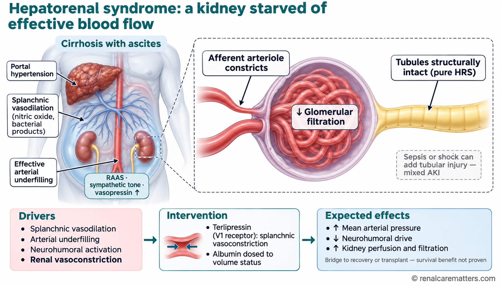
Widened gut vessels leave the arteries underfilled, so hormones that defend blood pressure squeeze the small artery feeding each kidney filter. Filtration falls even though the kidney tissue is intact. Terlipressin, which acts on vasopressin type 1 (V1) receptors, narrows the gut vessels, raises blood pressure, and lets the kidney’s own vessels relax. Kidney function often improves, but this has not been shown to lengthen survival on its own.
- HRS
- Hepatorenal syndrome
- AKI
- Acute kidney injury
- RAAS
- Renin–angiotensin–aldosterone system
- V1
- Vasopressin type 1 receptor
Recognize AKI and Apply the ADQI–ICA Criteria
Choose the baseline deliberately. Use the lowest stable SCr from the previous 3 months; if none exists, the most recent value up to 12 months earlier may be used. When there is no prior value at all, the consensus suggests the lower of the admission SCr or a value back-calculated from an estimated glomerular filtration rate (eGFR) of 75 mL/min/1.73 m², and you should document that the baseline is uncertain.1 Baseline choice is not paperwork: a falsely high baseline, taken after community-acquired injury began, hides the AKI and delays treatment.
Distrust the creatinine in both directions. Cirrhosis lowers creatinine generation through muscle loss, expands its volume of distribution through ascites and edema, and, in some assays, high bilirubin interferes with measurement; large-volume transfusion can lower it further. A creatinine of 1.3 mg/dL in a sarcopenic patient can represent a substantial fall in glomerular filtration rate (GFR). Standard eGFR equations assume a steady state and overestimate true GFR in cirrhosis, particularly with ascites or low GFR. Cystatin C is less dependent on muscle mass, can rise before creatinine, and adds prognostic information; use it where available, recognizing that it is not part of the diagnostic criteria.1
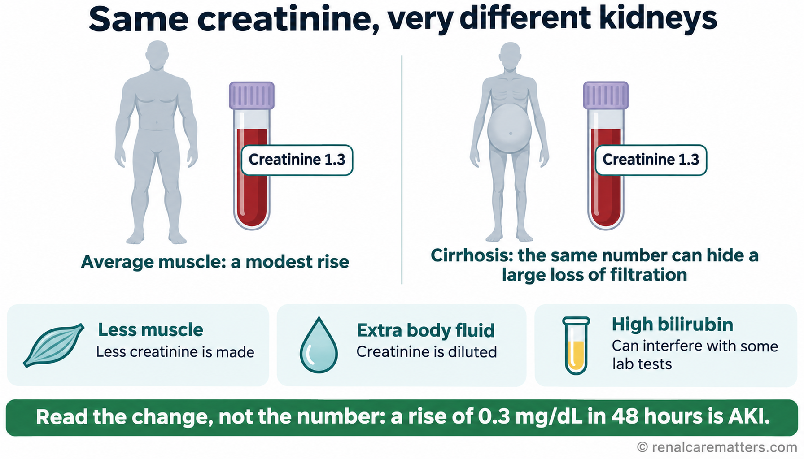
Creatinine comes from muscle, so a person with cirrhosis and muscle wasting makes less of it. Extra body fluid dilutes it, and high bilirubin can interfere with some laboratory methods. The same creatinine can therefore hide a much larger fall in kidney filtration. That is why AKI is recognized from the change over hours and days, not from whether the number looks normal.
- AKI
- Acute kidney injury
Measure urine output properly. Hourly or timed UO is a sensitive early signal and oliguria predicts worse outcomes in critically ill patients with cirrhosis. Its value depends on the measurement: confirm catheter patency or collection reliability, record the method, and interpret UO in light of recent diuretic doses, which can produce urine without implying recovery.1
HRS-AKI — all four elements are required
- Cirrhosis with ascites.
- AKI by an SCr rise of ≥0.3 mg/dL (26.5 µmol/L) within 48 hours, or ≥50% over baseline known or presumed to have occurred within the prior 7 days, and/or UO ≤0.5 mL/kg/h for ≥6 hours.
- No improvement in SCr and/or UO within 24 hours after adequate volume resuscitation, when resuscitation is clinically indicated. If volume is already adequate or excessive, proceed with diagnostic assessment — there is no mandatory fluid trial and no waiting period.
- No strong evidence that another process is the primary cause. Vasopressor-dependent septic shock, obstruction, nephrotoxic drug injury, and acute glomerular disease are examples that redirect the working diagnosis.
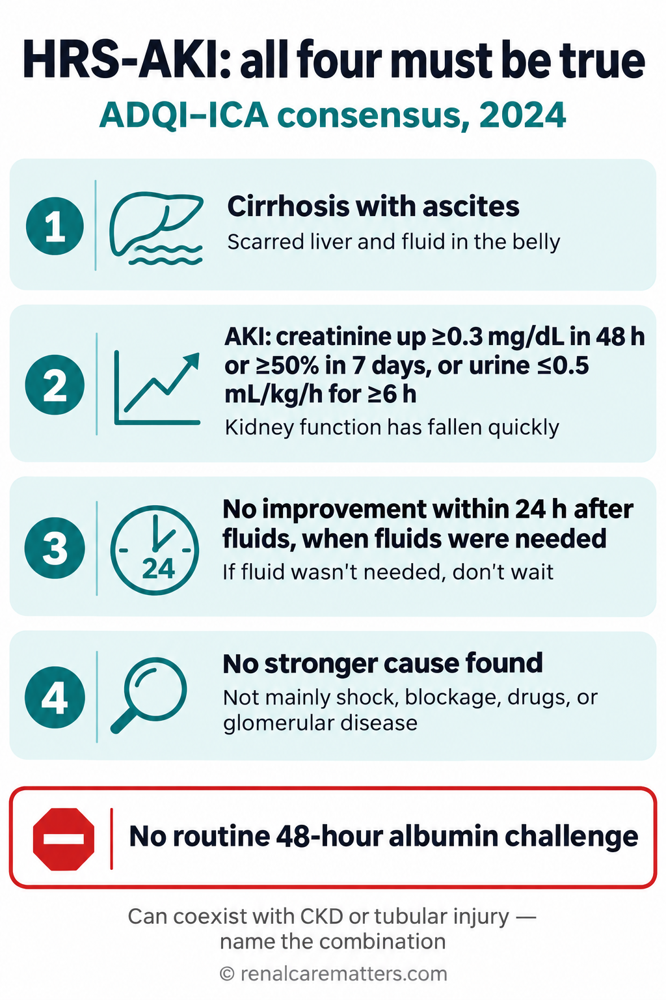
Hepatorenal syndrome–AKI is diagnosed only when all four conditions are met: cirrhosis with fluid in the abdomen, a rapid fall in kidney function, no improvement within a day of fluids when fluids were actually needed, and no stronger explanation such as shock, blockage, or a drug.
- HRS-AKI
- Hepatorenal syndrome–acute kidney injury
- ADQI–ICA
- Acute Disease Quality Initiative and International Club of Ascites
- CKD
- Chronic kidney disease
What changed, and why it matters. The older International Club of Ascites criteria required 2 days of diuretic withdrawal plus albumin before HRS could be diagnosed. Uniform albumin loading caused harm through volume overload, and the wait delayed vasoconstrictors in a syndrome where response is better at lower creatinine.1,13 The 2024 consensus therefore recommends against routine 48-hour albumin administration as a prerequisite for diagnosis, and anchors the decision to a 24-hour response only when fluid is genuinely indicated. Note also the UO wording: ADQI–ICA uses ≤0.5 mL/kg/h, whereas the generic Kidney Disease: Improving Global Outcomes (KDIGO) 2012 AKI definition uses <0.5 mL/kg/h.1,2 Keep each wording attributed to its source. KDIGO's 2026 AKI and acute kidney disease (AKD) guideline update completed public review in May 2026; check its final status before relying on any revised staging language.
Terminology. Use HRS-AKI for the acute phenotype, and HRS-AKD or HRS-CKD for longer-duration hepatorenal dysfunction outside the acute window; these replace "type 1" and "type 2" HRS.1 Describe superimposed disease explicitly — "HRS-AKI on CKD," "HRS-AKI with probable superimposed ATI" — because the treatment and the prognosis differ. Historical "type 1 HRS" remains relevant only because it defined eligibility in the pivotal trials, which used an SCr threshold of about 2.25–2.5 mg/dL; patients diagnosed today under the earlier 2024 criteria are, on average, less advanced than the trial populations.1,4
Regional guidance differs — attribute the criteria you use
The American Association for the Study of Liver Diseases (AASLD) 2021 guidance, the European Association for the Study of the Liver (EASL) 2018 guideline, and the 2026 Korean Association for the Study of the Liver (KASL) guideline each describe resuscitation and diagnostic steps differently from ADQI–ICA.6,11,12 This guide adopts the ADQI–ICA framework because it is the most recent multidisciplinary consensus that includes nephrology, hepatology, and critical care. When a local protocol follows another society, say so in the note.
Stabilize, Phenotype, and Reassess
The first shift has two jobs that run in parallel: treat anything that kills quickly, and assemble enough data to classify the AKI. Review baseline SCr, timed UO, MAP and perfusion, oxygen requirement, cumulative fluid balance, recent losses, bleeding, recent paracentesis, infection, and every drug given in the past week. Obtain urinalysis with microscopy, quantify proteinuria when the dipstick or history suggests it, and check for retention or obstruction with a bladder scan and kidney ultrasound when appropriate.1,6
Do the diagnostic paracentesis. In a hospitalized patient with cirrhosis and ascites, prompt diagnostic paracentesis is part of the AKI work-up because SBP is the most common precipitant of HRS-AKI and is often clinically silent. An ascitic polymorphonuclear (PMN) count ≥250 cells/mm³ supports prompt SBP treatment. Send the cell count with differential and inoculate blood-culture bottles at the bedside, which improves culture yield.1,6,11 Start empiric treatment for suspected shock or infection without waiting for the full AKI work-up.
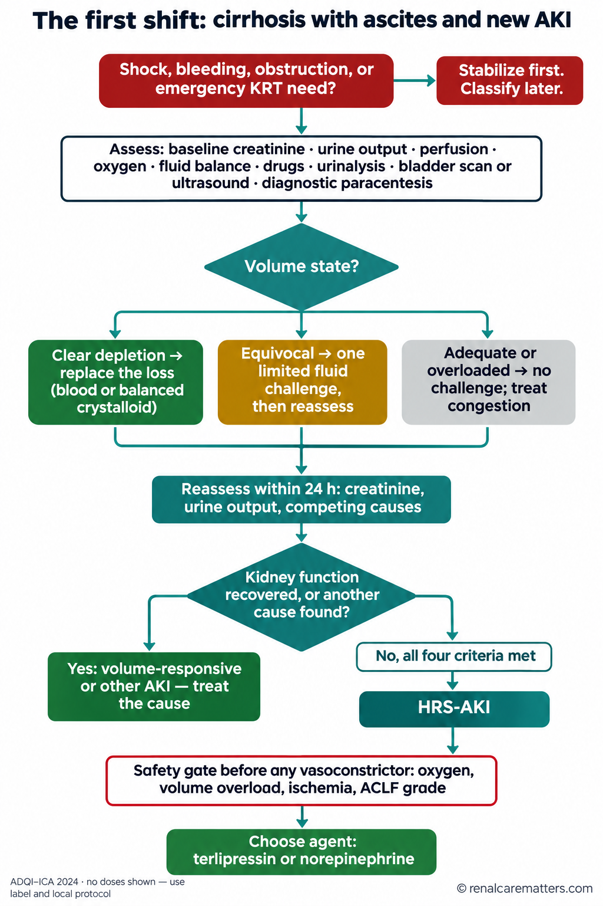
The first day runs in order: treat emergencies, gather the assessment, decide whether the patient needs fluid, recheck within 24 hours, and only then label the kidney problem. If it is hepatorenal syndrome, a safety check comes before any blood-vessel-tightening drug.
- AKI
- Acute kidney injury
- KRT
- Kidney replacement therapy
- HRS-AKI
- Hepatorenal syndrome–acute kidney injury
- ACLF
- Acute-on-chronic liver failure
| Working phenotype | Clues | Next step |
|---|---|---|
| Volume-responsive AKI | Bleeding, diarrhea, overdiuresis, or poor intake; perfusion and kidney trajectory improve after correction | Replace the appropriate loss, reassess after each intervention, address the trigger |
| Sepsis-associated or ischemic ATI | Shock, sustained hypotension, nephrotoxin exposure; granular casts or tubular epithelial cells when present; high urinary neutrophil gelatinase-associated lipocalin (uNGAL) where available | Treat infection and shock, review exposures, reassess for residual or mixed HRS physiology after stabilization |
| HRS-AKI | Cirrhosis with ascites, persistent AKI after indicated volume correction, no stronger primary explanation | Initiate the monitored HRS pathway once criteria are met |
| Congestive or pressure-related AKI | Pulmonary edema, right-heart findings, raised venous pressure, or tense ascites with concern for pressure effects | Reassess cardiac function and congestion; consider paracentesis with albumin replacement with the treating team |
| Glomerular, drug-related, or obstructive AKI | Active sediment, substantial new proteinuria, compatible drug timing, retention or hydronephrosis | Investigate and treat the competing diagnosis; obtain nephrology input |
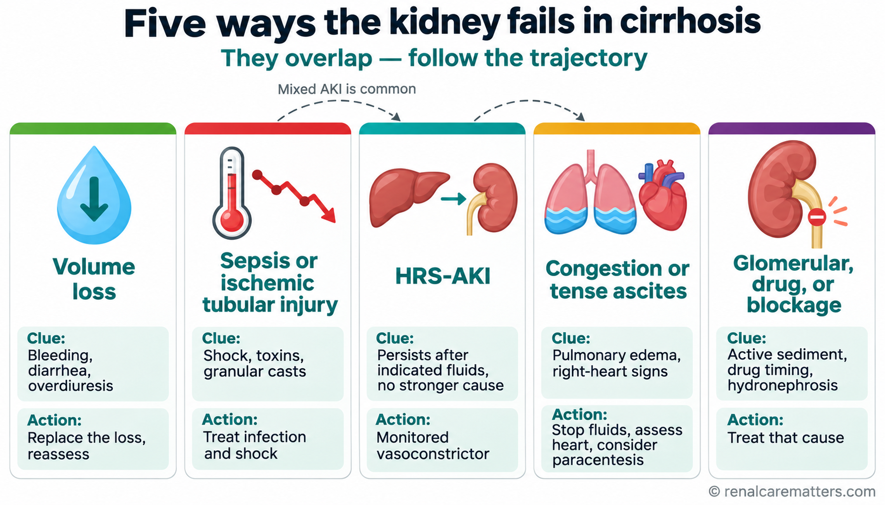
Kidney failure in cirrhosis has five common patterns, and they often overlap. Each pattern has a telltale clue and a different first action, which is why the team keeps re-checking the cause as the days go on.
- HRS-AKI
- Hepatorenal syndrome–acute kidney injury
- AKI
- Acute kidney injury
Phenotypes overlap, and the tests are imperfect. A fractional excretion of sodium (FENa) below 1% is common in cirrhosis even without AKI, so a low FENa does not establish HRS; very low thresholds (below 0.1–0.2%) may be more specific but are often unmeasurable because laboratories do not report low urine sodium.1 A bland sediment does not prove HRS either. Urinary NGAL is the best-studied injury marker: in a prospective U.S. cohort of 213 patients, a cut point of 244 µg/g creatinine separated acute tubular necrosis from prerenal AKI and HRS with a C statistic of 0.76, and higher NGAL was associated with 90-day death.9 Values overlap between phenotypes and depend on the assay, so treat NGAL as supportive information rather than a diagnostic switch. Pre-existing CKD, proteinuria, and tubular injury can all coexist with HRS-AKI; follow the trajectory and repeat the differential whenever the findings diverge from the expected course.
Match the fluid to the indication
Fluid choice follows the problem.1 Use blood products for hemorrhage according to the bleeding pathway, and balanced crystalloid for ordinary volume depletion that requires resuscitation. When volume status remains equivocal and there is a reasonable prospect of fluid responsiveness, the ADQI–ICA management algorithm describes a limited challenge — 250–500 mL of crystalloid, or 20–25% albumin at 1–1.5 g/kg — followed by reassessment. Give a challenge only when the bedside assessment supports it, and use a combination of examination, imaging, and static or dynamic measures to judge the response, since no single method is superior.1 If congestion or worsening oxygenation appears, stop further empiric fluid and reassess. Point-of-care ultrasound can help, but its signals (inferior vena cava size, venous Doppler patterns) are confounded by tense ascites and raised abdominal pressure, so read them with that limitation in mind.
Medicines. Stop nonsteroidal anti-inflammatory drugs (NSAIDs) and avoidable nephrotoxins, hold diuretics, and review kidney-cleared drugs. Nonselective beta-blockers reduce portal pressure and variceal bleeding risk, but in a hypotensive or AKI patient they can blunt the compensatory cardiac output the kidney depends on; reconsider them in the context of perfusion, bleeding risk, and congestion rather than stopping them reflexively.1,6
Albumin by Indication, Then a Monitored Vasoconstrictor
Keep the albumin indications separate
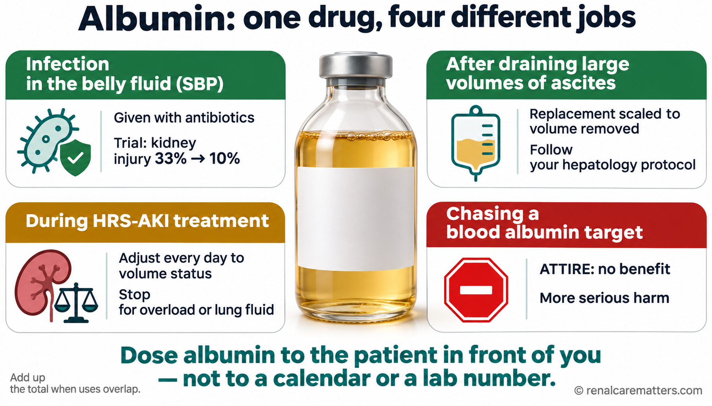
Albumin helps in some situations and harms in others. It reduces kidney injury when given with antibiotics for infected abdominal fluid, and it protects the circulation after large fluid drainage. During hepatorenal syndrome treatment the dose is adjusted daily and stopped if fluid builds up in the lungs. In the ATTIRE (Albumin to Prevent Infection in Chronic Liver Failure) trial, infusing it simply to raise the blood albumin level gave no benefit and more serious side effects.
- SBP
- Spontaneous bacterial peritonitis
- HRS-AKI
- Hepatorenal syndrome–acute kidney injury
- ATTIRE
- Albumin to Prevent Infection in Chronic Liver Failure trial
Albumin is not one therapy. It appears in at least four distinct situations in cirrhosis, each with its own evidence base, dose, and ceiling, and confusing them is how patients receive several hundred grams in a few days. Review the cumulative albumin total whenever indications overlap.1,5
1 · SBP treatment
Antibiotics plus 20% albumin, 1.5 g/kg on day 1 and 1 g/kg on day 3. In the original trial of 126 patients, albumin reduced kidney impairment from 33% to 10% — an absolute risk reduction (ARR) of 23 points and a number needed to treat (NNT) of about 4 — and in-hospital death from 29% to 10%.10 Benefit was concentrated in higher-risk patients (bilirubin >4 mg/dL or SCr >1 mg/dL); the dose itself was chosen empirically.1
2 · Large-volume paracentesis
A separate replacement protocol, scaled to the volume removed, prevents paracentesis-induced circulatory dysfunction and AKI. Follow the hepatology guideline in use locally.1,6,12
3 · During HRS-AKI treatment
20–25% albumin, typically 20–40 g/day, adjusted daily to volume status and stopped immediately for volume overload or pulmonary edema. The optimal dose and duration are not defined.1
4 · Targeting a serum albumin level
The ATTIRE trial (777 hospitalized patients) found that daily infusions targeting serum albumin ≥3 g/dL — median 200 g versus 20 g — did not reduce the composite of infection, kidney dysfunction, or death (29.7% versus 30.2%) and produced more severe or life-threatening serious adverse events.5 A post hoc analysis suggests that combining targeted albumin with terlipressin increased death and fluid-related complications, particularly after variceal bleeding.22
Why albumin can help in one setting and harm in another. Albumin expands plasma volume and may bind inflammatory mediators, which plausibly explains its benefit in SBP, where acute vasodilation suddenly underfills the circulation. In a patient who is already euvolemic or congested — especially one who is also receiving a vasoconstrictor that raises afterload — the same volume moves into the lungs. The consistent message from ATTIRE and the terlipressin safety data is that albumin must be dosed against a reassessed volume state, never against a calendar or a laboratory target.1,5,23
Choose the vasoconstrictor
Terlipressin is a vasopressin analog that acts mainly on V1 receptors in vascular smooth muscle. In the splanchnic bed, V1-mediated constriction reduces pooling and portal inflow, raises MAP, and unloads the neurohumoral response that is constricting the kidney. The same receptor sits on coronary, mesenteric, peripheral, and cutaneous vessels — which is where its ischemic adverse effects come from — and the rise in afterload with reflex slowing of the heart may contribute to pulmonary edema when it is combined with generous albumin.1,23 ADQI–ICA names terlipressin the first-line vasoconstrictor, preferably as a continuous infusion, given promptly once HRS-AKI is diagnosed and paired with volume-guided albumin.1 A small randomized trial found continuous infusion as effective as boluses at a lower daily dose, with fewer adverse events (35% versus 62%).15 The U.S. product label, however, approves bolus administration only — another reason to keep consensus and label statements apart.3
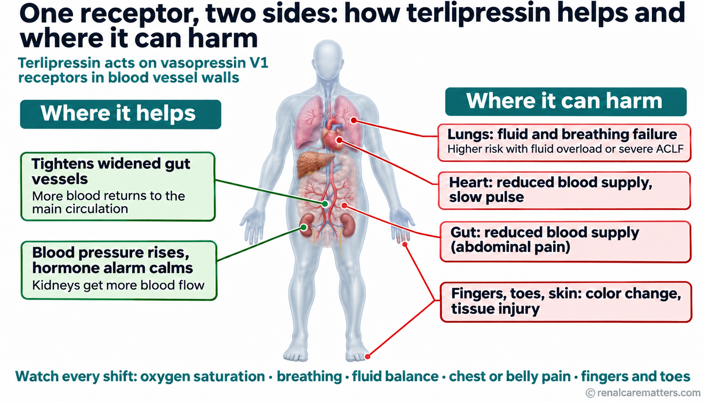
Terlipressin tightens blood vessels by acting on V1 receptors. In the gut this helps, sending blood back toward the kidneys. The same receptors in the heart, gut, fingers, and toes can reduce blood supply there, and the lungs can fill with fluid, especially when the patient is already overloaded. This is why oxygen, breathing, fluid balance, and pain are checked every shift.
- V1
- Vasopressin type 1 receptor
- ACLF
- Acute-on-chronic liver failure
Norepinephrine is the monitored alternative when terlipressin is unavailable or unsuitable. Meta-analyses of small trials show similar HRS reversal with norepinephrine and terlipressin — for example, an odds ratio (OR) of 1.33 favoring terlipressin, with a 95% confidence interval (CI) of 0.80–2.22 that crosses no effect — with different adverse-effect profiles.16,17 One open-label trial in ACLF found terlipressin superior (reversal 40% versus 16.7%; 28-day survival 48.3% versus 20%), so the equivalence may not hold in the sickest patients.14 Norepinephrine generally requires intensive care unit (ICU) monitoring and central or protocol-approved venous access; titrate it under the institutional infusion protocol, tracking MAP and kidney response. The consensus escalates norepinephrine when MAP has not risen by ≥10 mmHg and escalates terlipressin when SCr has not fallen by 25% from baseline.1 Septic shock is treated through its own vasopressor and source-control pathway, not as HRS.
Midodrine plus octreotide has lower expected efficacy — in one meta-analysis, about 91% lower odds of reversal than terlipressin or norepinephrine.17 Reserve it as a fallback when terlipressin cannot be used and monitored norepinephrine is not feasible, and consider transfer when the required monitoring or organ support is unavailable.1,6
Timing. Response is better when vasoconstrictors start at lower SCr — trial data suggest below about 2.25 mg/dL — which is a central reason ADQI–ICA removed the 48-hour wait.1 In a small single-center randomized trial in ACLF (the eTerli study), starting terlipressin 12 hours rather than 48 hours after initial albumin increased day-7 AKI reversal (68.6% versus 31.4%).21 That result is consistent with the physiology but comes from one open-label trial and needs confirmation.
⛔ Terlipressin safety gate — check before the first dose and every shift
- Boxed warning: serious or fatal respiratory failure. Patients with volume overload or ACLF grade 3 are at increased risk.
- Before starting: assess oxygen saturation (SpO₂), respiratory symptoms, volume status, ACLF grade, ongoing ischemia, and transplant priority.
- Do not start in hypoxia (e.g., SpO₂ <90%) until oxygenation improves. Hypoxia or worsening respiratory symptoms, and ongoing coronary, peripheral, or mesenteric ischemia, are contraindications.
- Avoid in ACLF grade 3 per the U.S. label. The label's grade comes from the trial-era grading system; the October 2026 global multisociety ACLF consensus introduces a new three-grade scale, so do not transpose the new grade 3 into the label without checking the definition used.8
- During therapy: continuous pulse oximetry and regular clinical review. Discontinue for SpO₂ <90%, hypoxia, worsening respiratory symptoms, or suspected ischemia. Manage volume overload by reducing or stopping albumin and other fluids and by judicious diuretic use; interrupt, reduce, or stop terlipressin until volume improves.
- SCr >5 mg/dL: benefit is unlikely.
- Highly prioritized transplant candidates, for example a Model for End-Stage Liver Disease (MELD) score ≥35: respiratory failure or ischemia could jeopardize transplant eligibility, so discuss the balance with the transplant team before starting.
- Bradycardia is the only cardiac adverse event more frequent than placebo in pooled trials (6.3% versus 0.8%), usually without treatment discontinuation.24
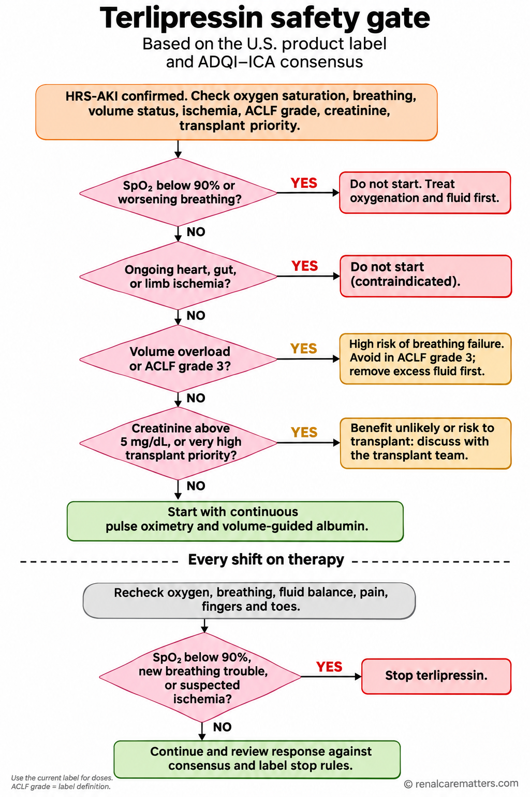
Before the first dose, the team rules out low oxygen, active blood-flow problems in the heart, gut, or limbs, and fluid overload, and weighs very high creatinine or high transplant priority. On treatment, oxygen is monitored continuously, and the drug is stopped if oxygen falls below 90%, breathing worsens, or a blood-flow problem appears.
- HRS-AKI
- Hepatorenal syndrome–acute kidney injury
- SpO₂
- Peripheral oxygen saturation
- ACLF
- Acute-on-chronic liver failure
- ADQI–ICA
- Acute Disease Quality Initiative and International Club of Ascites
Monitoring on any vasoconstrictor. Follow SCr and UO alongside MAP, oxygenation, fluid balance, and signs of digital, mesenteric, or myocardial ischemia (abdominal pain, chest pain, cyanotic fingers, skin necrosis). If perfusion improves but kidney function does not, re-evaluate for ATI, infection, obstruction, glomerular disease, or ongoing congestion.1
Response and stop rules — two sources, kept apart
ADQI–ICA stopping criteria (any vasoconstrictor)1
- SCr returns to within 0.3 mg/dL of baseline
- A severe adverse reaction develops
- No improvement after 48 hours at maximum tolerated doses
- KRT becomes indicated
- A maximum of 14 days of therapy
TERLIVAZ label rules (terlipressin only)3
- Record the last SCr before the first dose as the baseline
- A fixed starting regimen on Days 1–3
- Day 4: compare SCr with baseline — continue, consider escalation, or stop according to the label's dosing chart
- Continue to the label's response end point, up to 14 days
- Use the current label for doses; this guide does not reproduce an order set
Jurisdiction and product context
TERLIVAZ (terlipressin)
Approved to improve kidney function in adults with hepatorenal syndrome with rapid reduction in kidney function. Strength is expressed as 0.85 mg terlipressin per vial, equivalent to 1 mg terlipressin acetate. Bolus administration only.3
Glypressin (terlipressin acetate 1 mg)
The Philippine Food and Drug Administration verification portal lists a registration record (DR-XY36684). A registration record does not confirm hospital stock, the HRS indication, or dosing. Confirm availability, labeled indication, preparation, and administration with the Philippine product information and your pharmacy. Strength conventions differ between products, so do not convert doses between labels.
What the Trials Show — and What They Do Not
CONFIRM randomized 300 adults meeting historical type 1 HRS criteria to terlipressin or placebo, both with recommended albumin, for up to 14 days.4 Its primary end point, verified HRS reversal, required two SCr values ≤1.5 mg/dL at least 2 hours apart plus survival without KRT for at least 10 days after treatment. Terlipressin demonstrated a higher rate of verified reversal; it did not demonstrate a survival benefit, and death from respiratory disorders was more frequent.
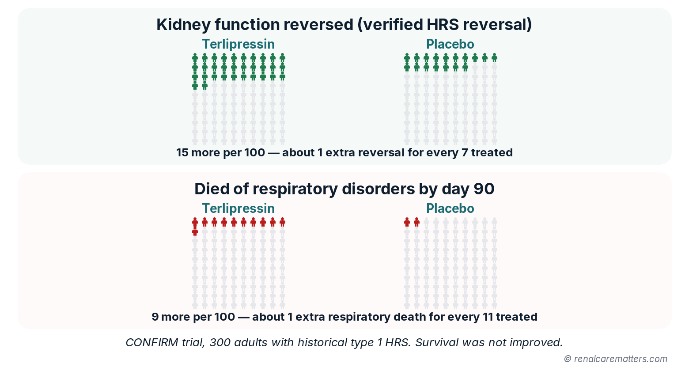
Out of every 100 people treated in the CONFIRM trial, about 15 more had their kidney function reverse with terlipressin than with placebo, and about 9 more died of breathing-related causes by 3 months. Survival overall was not improved, which is why careful patient selection and monitoring matter.
- HRS
- Hepatorenal syndrome
The product label separately reports serious or fatal respiratory failure in 14% versus 5% — a different end point from the trial's respiratory death figure, so keep each number attached to its source.3,4 Day-90 death was 51% versus 45%, a difference the trial was not powered to interpret. Two features limit extrapolation: the historical entry criteria enrolled patients with more advanced kidney dysfunction than today's earlier HRS-AKI definition captures, and patients with shock were excluded.4
| Study | Design and population | Result (end point) | How to use it |
|---|---|---|---|
| CONFIRM, 20214 | Randomized, 300, historical type 1 HRS | Verified reversal 32% vs 17%; respiratory death 11% vs 2% | Kidney benefit with real respiratory harm; select and monitor |
| CONFIRM label-eligible subgroup, 202519 | Post hoc, excluding ACLF grade 3 and SCr ≥5 mg/dL | Reversal 43% vs 17%; respiratory failure 11% vs 7% (P=.36) | Suggests a better benefit–risk balance with label-based selection; hypothesis-generating |
| Arora, 202014 | Open-label randomized, 120, ACLF with HRS-AKI | Reversal 40% vs 16.7%; 28-day survival 48.3% vs 20% (terlipressin vs norepinephrine) | Favors terlipressin in ACLF; single center |
| Olson, 202416 | Meta-analysis, 7 trials, 376 patients | Reversal OR 1.33 (95% CI 0.80–2.22) | Norepinephrine is a reasonable monitored alternative |
| Braga, 202518 | Meta-analysis, 9 trials, terlipressin vs albumin ± placebo | Less reversal failure (relative risk, RR 0.64); no 90-day mortality difference | Consistent kidney benefit; survival benefit unproven |
| Cavallin, 201615 | Randomized, 78, infusion vs bolus | Similar response; adverse events 35% vs 62% | Infusion is better tolerated where permitted |
| eTerli, 202421 | Randomized, 70, ACLF; terlipressin at 12 h vs 48 h | Day-7 reversal 68.6% vs 31.4% | Supports early start; small, single center |
| ATTIRE, 20215 | Randomized, 777, targeted albumin | No benefit (29.7% vs 30.2%); more severe adverse events | Do not infuse albumin to a serum target |
| Sort, 199910 | Randomized, 126, SBP | Kidney impairment 33% vs 10%; in-hospital death 29% vs 10% | Albumin with antibiotics in higher-risk SBP |
Reading these results together. Vasoconstrictors consistently reverse HRS more often than placebo, and reversal is associated with less need for KRT before and after transplant: among CONFIRM patients who later received a liver transplant, those treated with terlipressin needed KRT less often at 12 months.25 None of the trials has shown that a vasoconstrictor improves transplant-free survival, which is why the consensus frames treatment as a bridge to recovery or transplantation.1,18 A subtler point: lowering SCr lowers the MELD score and can reduce transplant priority, which some allocation systems offset by holding the pre-treatment creatinine.1
Transplant, Kidney Support, and the Months After
Liver transplantation is the definitive treatment for eligible patients, whether or not the kidney responds to a vasoconstrictor.1 An episode of AKI in decompensated cirrhosis signals high short-term mortality, so start hepatology and transplant evaluation early — in parallel with nephrology and ICU management, and even if SCr improves. Refer to the transplant center with the data it needs: baseline and peak SCr, UO trend, duration of kidney dysfunction, KRT dates, and any evidence of underlying CKD. Liver-alone versus simultaneous liver–kidney (SLK) transplantation belongs with the transplant center and its criteria; in the U.S. allocation policy, sustained AKI (for example, eGFR ≤25 mL/min for at least 6 weeks, with or without dialysis), established CKD, and a post-transplant kidney "safety net" shape that decision.1,26 MELD 3.0, which adds sex and albumin to the earlier sodium-adjusted model, is the current U.S. prioritization score.27
Kidney replacement therapy is started for clinical indications — refractory hyperkalemia, acidosis, pulmonary edema, or uremic complications — not for a creatinine number.1,2 Choose the modality by hemodynamics, local capacity, and team expertise; continuous KRT generally suits hemodynamically unstable patients and those at risk of cerebral edema. For patients whose recovery or transplant candidacy is uncertain, discuss goals, likely outcomes, and whether a time-limited KRT trial has defined milestones. The October 2026 global ACLF consensus adds critical-care statements on organ support and transplant decision-making in this population.7,8 See the continuous renal replacement therapy (CRRT) guide for prescription and anticoagulation, and the AKI-on-CKD guide when HRS physiology sits on reduced baseline reserve.
- Transplant: hepatology and transplant referral documented on the day HRS-AKI is diagnosed
- KRT: indications reviewed daily; modality, access, and goals-of-care plan recorded
- Palliative care: personalized evaluation offered for symptom burden and goals, independent of transplant status
- Prevention of recurrence: SBP prophylaxis where indicated, albumin with large-volume paracentesis, NSAID avoidance, cautious diuretic restart
- Discharge summary: baseline and discharge SCr, residual dysfunction, suspected AKI mechanisms, medication changes, who rechecks labs and when
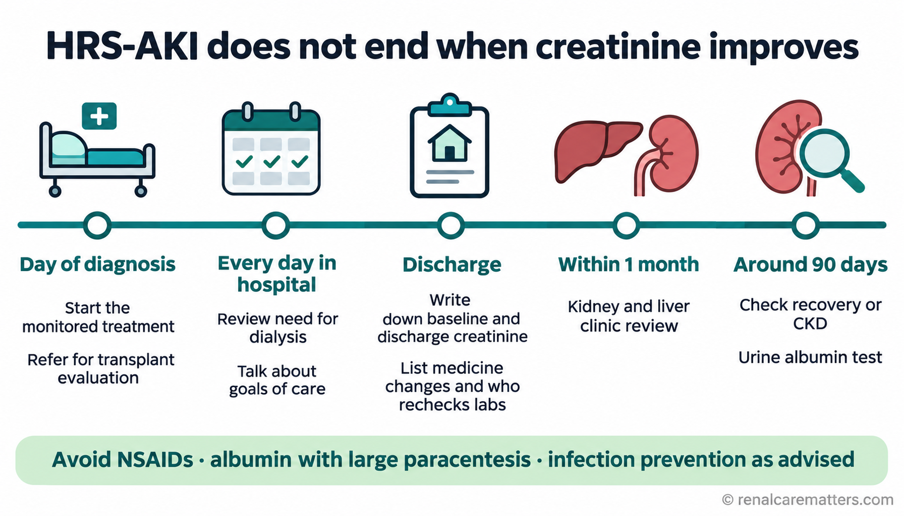
Care continues for months. Transplant referral starts on the day of diagnosis; dialysis needs and goals are reviewed daily; the discharge summary records kidney numbers and medicine changes; a kidney and liver review follows within a month; and recovery or chronic kidney disease is checked around 90 days.
- HRS-AKI
- Hepatorenal syndrome–acute kidney injury
- CKD
- Chronic kidney disease
- NSAIDs
- Nonsteroidal anti-inflammatory drugs
Follow-up. Almost half of patients with cirrhosis discharged after AKI are readmitted within 3 months.1 Arrange a combined kidney and liver review within 1 month at minimum, and sooner for higher-risk patients; assess recovery and CKD status around 90 days; and screen for albuminuria, which identifies patients at higher risk of CKD progression. Creatinine overestimates kidney function after an illness that has wasted muscle, so use cystatin C where it is available.1,2 The AKI after discharge guide covers the general 90-day pathway.
Where the Evidence Runs Out
Several questions that matter at the bedside remain unanswered. The pivotal trials used historical criteria, so response rates and harms under the 2024 definition — which captures patients earlier and at lower creatinine — are not directly known; better response is plausible but unproven.1 The best MAP target, absolute or relative, has not been tested prospectively.1,20 The optimal albumin dose during vasoconstrictor treatment is undefined, and the safety signal from ATTIRE and CONFIRM argues for less rather than more.1,5,23 Head-to-head trials of terlipressin and norepinephrine using current criteria are small, and the ACLF data come largely from one center.14,16 Injury biomarkers such as uNGAL have promising discrimination, but thresholds under the new criteria, and whether biomarker-guided treatment improves outcomes, are untested.1,9 Finally, new agents remain investigational: a selective V1a partial agonist, OCE-205, showed numerically higher improvement than placebo in a small phase 2 trial that stopped early, without a statistically significant difference.28
Three Synthetic Cases Through the Pathway
Original, synthetic adult vignettes for teaching. Open each case for the answer and rationale.
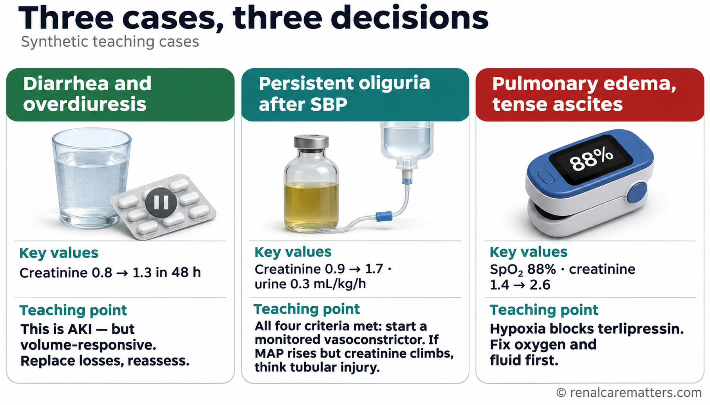
Three made-up but realistic patients show the three key decisions in this guide: a modest creatinine rise that still counts as kidney injury and responds to fluid, hepatorenal syndrome that needs a carefully monitored drug, and a patient with low oxygen in whom that drug must wait.
- AKI
- Acute kidney injury
- SBP
- Spontaneous bacterial peritonitis
- MAP
- Mean arterial pressure
- SpO₂
- Peripheral oxygen saturation
Case 1 · Diarrhea, overdiuresis, and a "normal" creatinine
A 58-year-old man with alcohol-associated cirrhosis and moderate ascites has had three days of diarrhea while continuing spironolactone and furosemide. SCr has risen from 0.8 to 1.3 mg/dL over 48 hours. He is orthostatic with dry mucous membranes; lungs are clear and SpO₂ is 97% on room air. Does he have AKI, and is this HRS-AKI?
Answer
Yes, this is AKI — a 0.5 mg/dL rise in 48 hours meets the criterion even though 1.3 mg/dL sits within many laboratory reference ranges. It is not yet HRS-AKI. The history and examination point to clear volume depletion, so the pathway branch is "replace losses": hold diuretics, give balanced crystalloid, perform a diagnostic paracentesis to exclude SBP, and reassess within 24 hours.
Rationale
With correction, perfusion and SCr improve, which classifies the episode as volume-responsive AKI and exits the HRS pathway. Recognizing the injury at a modest creatinine matters because, in a sarcopenic patient, the same number can hide a large fall in filtration; acting early is what prevents progression.1
Case 2 · Persistent oliguria after SBP stabilization
A 52-year-old woman with cirrhosis and ascites was admitted with SBP (ascitic PMN count 1,100 cells/mm³), treated with antibiotics and albumin. Shock has resolved without vasopressors, SpO₂ is 96% on room air, and her lungs are clear. SCr has risen from 0.9 to 1.7 mg/dL with UO of 0.3 mL/kg/h over the past 12 hours. Urinalysis is bland, the bladder is empty, and kidney ultrasound shows no hydronephrosis. Volume assessment suggests she is adequately filled. What is the working diagnosis, and what comes next?
Answer
She meets all four ADQI–ICA elements: cirrhosis with ascites, AKI by SCr and UO, persistent dysfunction despite indicated resuscitation, and no stronger primary cause. Because she is adequately filled, a further fluid challenge is not needed. Apply the safety gate — oxygenation acceptable, no overload, no ischemia, ACLF grade checked, SCr well below 5 mg/dL, transplant team informed — then start a monitored vasoconstrictor with volume-guided albumin, and refer for transplant evaluation the same day.
Rationale — the twist
On day 3, MAP has risen 16 mmHg but SCr continues to climb and granular casts appear. That combination argues for superimposed ATI rather than HRS refractoriness; re-evaluate for infection, nephrotoxins, and obstruction rather than escalating indefinitely, and apply the 48-hour stopping rule at maximum tolerated dose.1,3
Case 3 · AKI with pulmonary edema and SpO₂ 88%
A 61-year-old man with cirrhosis and tense ascites has SCr rising from 1.4 to 2.6 mg/dL over 3 days after receiving several days of albumin for a presumed prerenal state. He now has bilateral crackles and an SpO₂ of 88% on room air. Should terlipressin be started?
Answer
No — not now. Hypoxia with an SpO₂ below 90% is a contraindication under the U.S. label, and volume overload raises the respiratory risk further. Prioritize oxygenation, stop albumin and other empiric fluids, assess cardiac function and congestion, consider therapeutic paracentesis with albumin replacement for tense ascites, and assess the need for ICU care and KRT for fluid removal.
Rationale
This case shows how the old reflex — keep giving albumin until the creatinine responds — produces exactly the patient in whom the most effective HRS drug becomes unsafe. Revisit the vasoconstrictor decision only after oxygenation and volume status improve and the safety gate is passed.1,3,7